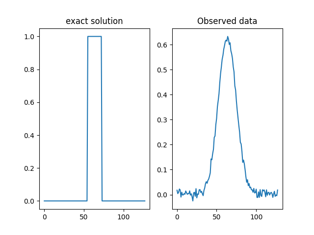
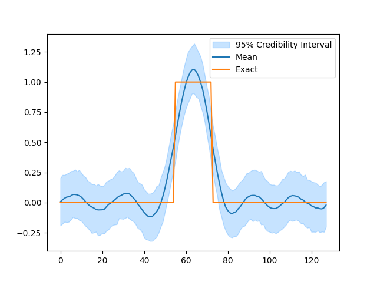
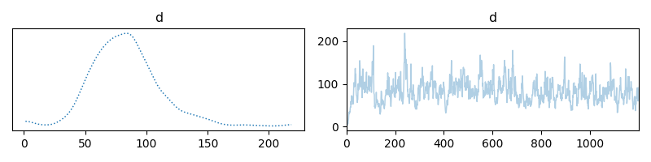
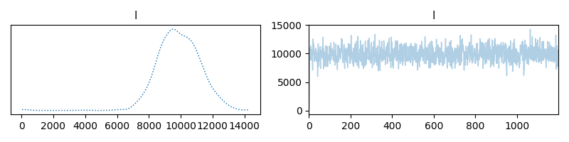
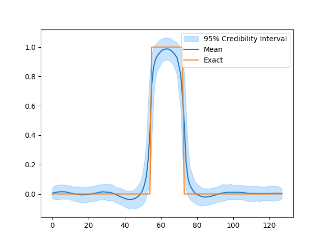
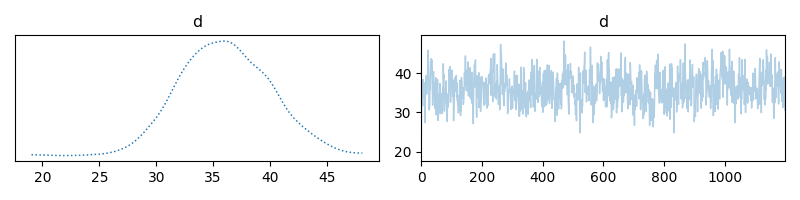
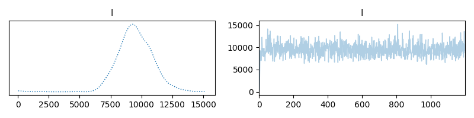

Note
Go to the end to download the full example code.
Gibbs sampling#
This tutorial shows how to use CUQIpy to perform Gibbs sampling. Gibbs sampling is a Markov chain Monte Carlo (MCMC) method for sampling a joint probability distribution.
Opposed to jointly sampling the distribution simultaneously, Gibbs sampling samples the variables of the distribution sequentially, one variable at a time. When a variable represents a random vector, the whole vector is sampled simultaneously.
The sampling of each variable is done by sampling from the conditional distribution of that variable given (fixed, previously sampled) values of the other variables.
This is often a very efficient way of sampling from a joint distribution if the conditional distributions are easy to sample from. This is one way to exploit the structure of the joint distribution. On the other hand, if the conditional distributions are highly correlated and/or are difficult to sample from, then Gibbs sampling can be very inefficient.
For these reasons, Gibbs sampling is often a double-edged sword, that needs to be used in the right context.
Setup#
We start by importing the necessary modules
import numpy as np
import matplotlib.pyplot as plt
from cuqi.testproblem import Deconvolution1D
from cuqi.distribution import Gaussian, Gamma, JointDistribution, GMRF, LMRF
from cuqi.sampler import HybridGibbs, LinearRTO, Conjugate, UGLA, ConjugateApprox
np.random.seed(0)
Forward model and data#
We define the forward model and data. Here we use a 1D deconvolution problem, so the forward model is linear, that is:
where \(\mathbf{A}\) is the convolution matrix, and \(\mathbf{x}\) is the input signal.
We load this example from the testproblem library of CUQIpy and visualize the true solution (sharp signal) and data (convolved signal).
# Model and data
A, y_obs, probinfo = Deconvolution1D(phantom='square').get_components()
# Get dimension of signal
n = A.domain_dim
# Plot exact solution and observed data
plt.subplot(121)
probinfo.exactSolution.plot()
plt.title('exact solution')
plt.subplot(122)
y_obs.plot()
plt.title("Observed data")

Text(0.5, 1.0, 'Observed data')
Hierarchical Bayesian model#
We define the following hierarchical model:
where \(\mathbf{y}\) is the observed data, and \(\mathbf{x}\) is the unknown signal. The hyperparameters \(d\) and \(l\) are the precision of the prior distribution of \(\mathbf{x}\) and the noise, respectively.
The prior distribution of \(\mathbf{x}\) is a Gaussian Markov random field (GMRF) with zero mean and precision \(d\). It can be viewed as a Gaussian prior on the differences between neighboring elements of \(\mathbf{x}\).
In CUQIpy the model can be defined as follows:
# Define distributions
d = Gamma(1, 1e-4)
l = Gamma(1, 1e-4)
x = GMRF(np.zeros(n), lambda d: d)
y = Gaussian(A, lambda l: 1/l)
# Combine into a joint distribution
joint = JointDistribution(d, l, x, y)
# View the joint distribution
print(joint)
JointDistribution(
Equation:
p(d,l,x,y) = p(d)p(l)p(x|d)p(y|x,l)
Densities:
d ~ CUQI Gamma.
l ~ CUQI Gamma.
x ~ CUQI GMRF. Conditioning variables ['d'].
y ~ CUQI Gaussian. Conditioning variables ['x', 'l'].
)
Notice that the joint distribution prints a mathematical expression for the density functions that make up \(p(d,l,\mathbf{x},\mathbf{y})\). In this case they are all distributions, but this need not be the case.
Defining the posterior distribution#
Now we define the posterior distribution, which is the joint distribution conditioned on the observed data. That is, \(p(d, l, \mathbf{x} \mid \mathbf{y}=\mathbf{y}_\mathrm{obs})\)
This is done in the following way:
# Define posterior by conditioning on the data
posterior = joint(y=y_obs)
# View the structure of the posterior
print(posterior)
JointDistribution(
Equation:
p(d,l,x|y) ∝ p(d)p(l)p(x|d)L(x,l|y)
Densities:
d ~ CUQI Gamma.
l ~ CUQI Gamma.
x ~ CUQI GMRF. Conditioning variables ['d'].
y ~ CUQI Gaussian Likelihood function. Parameters ['x', 'l'].
)
Notice that after conditioning on the data, the distribution associated with \(\mathbf{y}\) became a likelihood function and that the posterior is now a joint distribution of the variables \(d\), \(l\), \(\mathbf{x}\).
Gibbs Sampler#
The hierarchical model above has some important properties that we can exploit to make the sampling more efficient. First, note that the Gamma distribution are conjugate priors for the precision of the Gaussian distributions. This means that we can efficiently sample from \(d\) and \(l\) conditional on the other variables.
Second, note that the prior distribution of \(\mathbf{x}\) is
a Gaussian Markov random field (GMRF) and that the distribution for
\(\mathbf{y}\) is also Gaussian with a Linear operator acting
on \(\mathbf{x}\) as the mean variable. This means that we can
efficiently sample from \(\mathbf{x}\) conditional on the other
variables using the LinearRTO sampler.
Taking these two facts into account, we can define a HybridGibbs sampler
that uses the Conjugate sampler for \(d\) and \(l\) and
the LinearRTO sampler for \(\mathbf{x}\).
This is done in CUQIpy as follows:
# Define sampling strategy
sampling_strategy = {
'x': LinearRTO(),
'd': Conjugate(),
'l': Conjugate()
}
# Define HybridGibbs sampler
sampler = HybridGibbs(posterior, sampling_strategy)
# Run sampler
sampler.warmup(200)
sampler.sample(1000)
samples = sampler.get_samples()
Warmup: 0%| | 0/200 [00:00<?, ?it/s]
Warmup: 6%|▋ | 13/200 [00:00<00:01, 121.99it/s]
Warmup: 13%|█▎ | 26/200 [00:00<00:01, 124.06it/s]
Warmup: 20%|█▉ | 39/200 [00:00<00:01, 124.39it/s]
Warmup: 26%|██▌ | 52/200 [00:00<00:01, 124.85it/s]
Warmup: 32%|███▎ | 65/200 [00:00<00:01, 124.62it/s]
Warmup: 39%|███▉ | 78/200 [00:00<00:00, 124.60it/s]
Warmup: 46%|████▌ | 91/200 [00:00<00:00, 125.12it/s]
Warmup: 52%|█████▏ | 104/200 [00:00<00:00, 125.68it/s]
Warmup: 58%|█████▊ | 117/200 [00:00<00:00, 126.02it/s]
Warmup: 65%|██████▌ | 130/200 [00:01<00:00, 126.22it/s]
Warmup: 72%|███████▏ | 143/200 [00:01<00:00, 126.25it/s]
Warmup: 78%|███████▊ | 156/200 [00:01<00:00, 126.36it/s]
Warmup: 84%|████████▍ | 169/200 [00:01<00:00, 126.31it/s]
Warmup: 91%|█████████ | 182/200 [00:01<00:00, 126.47it/s]
Warmup: 98%|█████████▊| 195/200 [00:01<00:00, 126.47it/s]
Warmup: 100%|██████████| 200/200 [00:01<00:00, 125.69it/s]
Sample: 0%| | 0/1000 [00:00<?, ?it/s]
Sample: 1%|▏ | 13/1000 [00:00<00:07, 126.90it/s]
Sample: 3%|▎ | 26/1000 [00:00<00:07, 126.92it/s]
Sample: 4%|▍ | 39/1000 [00:00<00:07, 126.73it/s]
Sample: 5%|▌ | 52/1000 [00:00<00:07, 126.65it/s]
Sample: 6%|▋ | 65/1000 [00:00<00:07, 126.50it/s]
Sample: 8%|▊ | 78/1000 [00:00<00:07, 126.25it/s]
Sample: 9%|▉ | 91/1000 [00:00<00:07, 125.98it/s]
Sample: 10%|█ | 104/1000 [00:00<00:07, 126.40it/s]
Sample: 12%|█▏ | 117/1000 [00:00<00:06, 126.29it/s]
Sample: 13%|█▎ | 130/1000 [00:01<00:06, 126.29it/s]
Sample: 14%|█▍ | 143/1000 [00:01<00:06, 126.23it/s]
Sample: 16%|█▌ | 156/1000 [00:01<00:06, 126.52it/s]
Sample: 17%|█▋ | 169/1000 [00:01<00:06, 125.99it/s]
Sample: 18%|█▊ | 182/1000 [00:01<00:06, 126.08it/s]
Sample: 20%|█▉ | 195/1000 [00:01<00:06, 126.13it/s]
Sample: 21%|██ | 208/1000 [00:01<00:06, 126.25it/s]
Sample: 22%|██▏ | 221/1000 [00:01<00:06, 126.05it/s]
Sample: 23%|██▎ | 234/1000 [00:01<00:06, 126.26it/s]
Sample: 25%|██▍ | 247/1000 [00:01<00:05, 126.35it/s]
Sample: 26%|██▌ | 260/1000 [00:02<00:05, 125.98it/s]
Sample: 27%|██▋ | 273/1000 [00:02<00:05, 126.25it/s]
Sample: 29%|██▊ | 286/1000 [00:02<00:05, 126.45it/s]
Sample: 30%|██▉ | 299/1000 [00:02<00:05, 126.46it/s]
Sample: 31%|███ | 312/1000 [00:02<00:05, 125.58it/s]
Sample: 32%|███▎ | 325/1000 [00:02<00:05, 125.62it/s]
Sample: 34%|███▍ | 338/1000 [00:02<00:05, 125.85it/s]
Sample: 35%|███▌ | 351/1000 [00:02<00:05, 125.35it/s]
Sample: 36%|███▋ | 364/1000 [00:02<00:05, 125.54it/s]
Sample: 38%|███▊ | 377/1000 [00:02<00:04, 125.42it/s]
Sample: 39%|███▉ | 390/1000 [00:03<00:04, 125.48it/s]
Sample: 40%|████ | 403/1000 [00:03<00:04, 125.80it/s]
Sample: 42%|████▏ | 416/1000 [00:03<00:04, 125.75it/s]
Sample: 43%|████▎ | 429/1000 [00:03<00:04, 125.94it/s]
Sample: 44%|████▍ | 442/1000 [00:03<00:04, 126.04it/s]
Sample: 46%|████▌ | 455/1000 [00:03<00:04, 126.11it/s]
Sample: 47%|████▋ | 468/1000 [00:03<00:04, 126.36it/s]
Sample: 48%|████▊ | 481/1000 [00:03<00:04, 126.11it/s]
Sample: 49%|████▉ | 494/1000 [00:03<00:04, 126.45it/s]
Sample: 51%|█████ | 507/1000 [00:04<00:03, 126.57it/s]
Sample: 52%|█████▏ | 520/1000 [00:04<00:03, 126.46it/s]
Sample: 53%|█████▎ | 533/1000 [00:04<00:03, 126.63it/s]
Sample: 55%|█████▍ | 546/1000 [00:04<00:03, 126.76it/s]
Sample: 56%|█████▌ | 559/1000 [00:04<00:03, 126.42it/s]
Sample: 57%|█████▋ | 572/1000 [00:04<00:03, 123.51it/s]
Sample: 58%|█████▊ | 585/1000 [00:04<00:03, 122.97it/s]
Sample: 60%|█████▉ | 598/1000 [00:04<00:03, 123.99it/s]
Sample: 61%|██████ | 611/1000 [00:04<00:03, 124.71it/s]
Sample: 62%|██████▏ | 624/1000 [00:04<00:03, 125.14it/s]
Sample: 64%|██████▎ | 637/1000 [00:05<00:02, 125.36it/s]
Sample: 65%|██████▌ | 650/1000 [00:05<00:02, 125.40it/s]
Sample: 66%|██████▋ | 663/1000 [00:05<00:02, 125.58it/s]
Sample: 68%|██████▊ | 676/1000 [00:05<00:02, 125.86it/s]
Sample: 69%|██████▉ | 689/1000 [00:05<00:02, 124.91it/s]
Sample: 70%|███████ | 702/1000 [00:05<00:02, 125.45it/s]
Sample: 72%|███████▏ | 715/1000 [00:05<00:02, 125.80it/s]
Sample: 73%|███████▎ | 728/1000 [00:05<00:02, 125.96it/s]
Sample: 74%|███████▍ | 741/1000 [00:05<00:02, 124.95it/s]
Sample: 75%|███████▌ | 754/1000 [00:05<00:01, 124.69it/s]
Sample: 77%|███████▋ | 767/1000 [00:06<00:01, 124.32it/s]
Sample: 78%|███████▊ | 780/1000 [00:06<00:01, 124.89it/s]
Sample: 79%|███████▉ | 793/1000 [00:06<00:01, 125.26it/s]
Sample: 81%|████████ | 806/1000 [00:06<00:01, 125.38it/s]
Sample: 82%|████████▏ | 819/1000 [00:06<00:01, 124.49it/s]
Sample: 83%|████████▎ | 832/1000 [00:06<00:01, 124.38it/s]
Sample: 84%|████████▍ | 845/1000 [00:06<00:01, 123.93it/s]
Sample: 86%|████████▌ | 858/1000 [00:06<00:01, 123.72it/s]
Sample: 87%|████████▋ | 871/1000 [00:06<00:01, 124.17it/s]
Sample: 88%|████████▊ | 884/1000 [00:07<00:00, 123.17it/s]
Sample: 90%|████████▉ | 897/1000 [00:07<00:00, 123.43it/s]
Sample: 91%|█████████ | 910/1000 [00:07<00:00, 124.21it/s]
Sample: 92%|█████████▏| 923/1000 [00:07<00:00, 124.83it/s]
Sample: 94%|█████████▎| 936/1000 [00:07<00:00, 125.35it/s]
Sample: 95%|█████████▍| 949/1000 [00:07<00:00, 125.65it/s]
Sample: 96%|█████████▌| 962/1000 [00:07<00:00, 125.91it/s]
Sample: 98%|█████████▊| 975/1000 [00:07<00:00, 126.30it/s]
Sample: 99%|█████████▉| 988/1000 [00:07<00:00, 126.12it/s]
Sample: 100%|██████████| 1000/1000 [00:07<00:00, 125.59it/s]
Analyze results#
After sampling we can inspect the results. The samples are stored as a dictionary with the variable names as keys. Samples for each variable is stored as a CUQIpy Samples object which contains the many convenience methods for diagnostics and plotting of MCMC samples.
# Plot credible intervals for the signal
samples['x'].plot_ci(exact=probinfo.exactSolution)

[<matplotlib.lines.Line2D object at 0x7f4701aeed50>, <matplotlib.lines.Line2D object at 0x7f4701aee0c0>, <matplotlib.collections.FillBetweenPolyCollection object at 0x7f47019db4d0>]
Trace plot for d
samples['d'].plot_trace(figsize=(8,2))

array([[<Axes: title={'center': 'd'}>, <Axes: title={'center': 'd'}>]],
dtype=object)
Trace plot for l
samples['l'].plot_trace(figsize=(8,2))

array([[<Axes: title={'center': 'l'}>, <Axes: title={'center': 'l'}>]],
dtype=object)
Switching to a piecewise constant prior#
Notice that while the sampling went well in the previous example, the posterior distribution did not match the characteristics of the exact solution. We can improve this result by switching to a prior that better matches the exact solution \(\mathbf{x}\).
One choice is the Laplace difference prior, which assumes a Laplace distribution for the differences between neighboring elements of \(\mathbf{x}\). That is,
which means that \(x_i-x_{i-1} \sim \mathrm{Laplace}(0, d^{-1})\).
This prior is implemented in CUQIpy as the LMRF distribution.
To update our model we simply need to replace the GMRF distribution
with the LMRF distribution. Note that the Laplace distribution
is defined via a scale parameter, so we invert the parameter \(d\).
This laplace distribution and new posterior can be defined as follows:
# Define new distribution for x
x = LMRF(0, lambda d: 1/d, geometry=n)
# Define new joint distribution with piecewise constant prior
joint_Ld = JointDistribution(d, l, x, y)
# Define new posterior by conditioning on the data
posterior_Ld = joint_Ld(y=y_obs)
print(posterior_Ld)
JointDistribution(
Equation:
p(d,l,x|y) ∝ p(d)p(l)p(x|d)L(x,l|y)
Densities:
d ~ CUQI Gamma.
l ~ CUQI Gamma.
x ~ CUQI LMRF. Conditioning variables ['d'].
y ~ CUQI Gaussian Likelihood function. Parameters ['x', 'l'].
)
HybridGibbs Sampler (with Laplace prior)#
Using the same approach as earlier we can define a HybridGibbs sampler
for this new hierarchical model. The only difference is that we
now need to use a different sampler for \(\mathbf{x}\) because
the LinearRTO sampler only works for Gaussian distributions.
In this case we use the UGLA (Unadjusted Gaussian Laplace Approximation) sampler for \(\mathbf{x}\). We also use an approximate Conjugate sampler for \(d\) which approximately samples from the posterior distribution of \(d\) conditional on the other variables in an efficient manner. For more details see e.g. this paper <https://arxiv.org/abs/2104.06919>.
# Define sampling strategy
sampling_strategy = {
'x': UGLA(),
'd': ConjugateApprox(),
'l': Conjugate()
}
# Define Gibbs sampler
sampler_Ld = HybridGibbs(posterior_Ld, sampling_strategy)
# Run sampler
sampler_Ld.warmup(200)
sampler_Ld.sample(1000)
samples_Ld = sampler_Ld.get_samples()
Warmup: 0%| | 0/200 [00:00<?, ?it/s]
Warmup: 2%|▎ | 5/200 [00:00<00:04, 48.59it/s]
Warmup: 5%|▌ | 10/200 [00:00<00:03, 48.49it/s]
Warmup: 8%|▊ | 15/200 [00:00<00:03, 48.26it/s]
Warmup: 10%|█ | 20/200 [00:00<00:03, 48.17it/s]
Warmup: 12%|█▎ | 25/200 [00:00<00:03, 48.32it/s]
Warmup: 15%|█▌ | 30/200 [00:00<00:03, 48.34it/s]
Warmup: 18%|█▊ | 35/200 [00:00<00:03, 48.47it/s]
Warmup: 20%|██ | 40/200 [00:00<00:03, 48.37it/s]
Warmup: 22%|██▎ | 45/200 [00:00<00:03, 48.28it/s]
Warmup: 25%|██▌ | 50/200 [00:01<00:03, 48.26it/s]
Warmup: 28%|██▊ | 55/200 [00:01<00:03, 47.98it/s]
Warmup: 30%|███ | 60/200 [00:01<00:02, 47.74it/s]
Warmup: 32%|███▎ | 65/200 [00:01<00:02, 47.66it/s]
Warmup: 35%|███▌ | 70/200 [00:01<00:02, 47.96it/s]
Warmup: 38%|███▊ | 75/200 [00:01<00:02, 48.19it/s]
Warmup: 40%|████ | 80/200 [00:01<00:02, 48.29it/s]
Warmup: 42%|████▎ | 85/200 [00:01<00:02, 48.36it/s]
Warmup: 45%|████▌ | 90/200 [00:01<00:02, 48.13it/s]
Warmup: 48%|████▊ | 95/200 [00:01<00:02, 48.27it/s]
Warmup: 50%|█████ | 100/200 [00:02<00:02, 48.30it/s]
Warmup: 52%|█████▎ | 105/200 [00:02<00:01, 48.25it/s]
Warmup: 55%|█████▌ | 110/200 [00:02<00:01, 48.47it/s]
Warmup: 57%|█████▊ | 115/200 [00:02<00:01, 48.50it/s]
Warmup: 60%|██████ | 120/200 [00:02<00:01, 48.62it/s]
Warmup: 62%|██████▎ | 125/200 [00:02<00:01, 48.61it/s]
Warmup: 65%|██████▌ | 130/200 [00:02<00:01, 48.74it/s]
Warmup: 68%|██████▊ | 135/200 [00:02<00:01, 48.80it/s]
Warmup: 70%|███████ | 140/200 [00:02<00:01, 48.68it/s]
Warmup: 72%|███████▎ | 145/200 [00:02<00:01, 48.69it/s]
Warmup: 75%|███████▌ | 150/200 [00:03<00:01, 48.66it/s]
Warmup: 78%|███████▊ | 155/200 [00:03<00:00, 48.57it/s]
Warmup: 80%|████████ | 160/200 [00:03<00:00, 48.50it/s]
Warmup: 82%|████████▎ | 165/200 [00:03<00:00, 48.18it/s]
Warmup: 85%|████████▌ | 170/200 [00:03<00:00, 48.00it/s]
Warmup: 88%|████████▊ | 175/200 [00:03<00:00, 47.81it/s]
Warmup: 90%|█████████ | 180/200 [00:03<00:00, 47.73it/s]
Warmup: 92%|█████████▎| 185/200 [00:03<00:00, 47.73it/s]
Warmup: 95%|█████████▌| 190/200 [00:03<00:00, 47.69it/s]
Warmup: 98%|█████████▊| 195/200 [00:04<00:00, 47.77it/s]
Warmup: 100%|██████████| 200/200 [00:04<00:00, 47.91it/s]
Warmup: 100%|██████████| 200/200 [00:04<00:00, 48.23it/s]
Sample: 0%| | 0/1000 [00:00<?, ?it/s]
Sample: 0%| | 5/1000 [00:00<00:20, 48.76it/s]
Sample: 1%| | 10/1000 [00:00<00:20, 48.82it/s]
Sample: 2%|▏ | 15/1000 [00:00<00:20, 48.73it/s]
Sample: 2%|▏ | 20/1000 [00:00<00:20, 48.77it/s]
Sample: 2%|▎ | 25/1000 [00:00<00:20, 48.63it/s]
Sample: 3%|▎ | 30/1000 [00:00<00:20, 48.43it/s]
Sample: 4%|▎ | 35/1000 [00:00<00:20, 48.06it/s]
Sample: 4%|▍ | 40/1000 [00:00<00:20, 47.90it/s]
Sample: 4%|▍ | 45/1000 [00:00<00:19, 48.03it/s]
Sample: 5%|▌ | 50/1000 [00:01<00:19, 48.24it/s]
Sample: 6%|▌ | 55/1000 [00:01<00:19, 48.38it/s]
Sample: 6%|▌ | 60/1000 [00:01<00:19, 48.43it/s]
Sample: 6%|▋ | 65/1000 [00:01<00:19, 48.56it/s]
Sample: 7%|▋ | 70/1000 [00:01<00:19, 48.51it/s]
Sample: 8%|▊ | 75/1000 [00:01<00:19, 48.56it/s]
Sample: 8%|▊ | 80/1000 [00:01<00:18, 48.68it/s]
Sample: 8%|▊ | 85/1000 [00:01<00:18, 48.49it/s]
Sample: 9%|▉ | 90/1000 [00:01<00:18, 48.64it/s]
Sample: 10%|▉ | 95/1000 [00:01<00:18, 48.78it/s]
Sample: 10%|█ | 100/1000 [00:02<00:18, 48.90it/s]
Sample: 10%|█ | 105/1000 [00:02<00:18, 48.92it/s]
Sample: 11%|█ | 110/1000 [00:02<00:18, 48.92it/s]
Sample: 12%|█▏ | 115/1000 [00:02<00:18, 48.91it/s]
Sample: 12%|█▏ | 120/1000 [00:02<00:18, 48.84it/s]
Sample: 12%|█▎ | 125/1000 [00:02<00:17, 48.67it/s]
Sample: 13%|█▎ | 130/1000 [00:02<00:17, 48.52it/s]
Sample: 14%|█▎ | 135/1000 [00:02<00:17, 48.21it/s]
Sample: 14%|█▍ | 140/1000 [00:02<00:17, 48.00it/s]
Sample: 14%|█▍ | 145/1000 [00:02<00:17, 47.93it/s]
Sample: 15%|█▌ | 150/1000 [00:03<00:17, 47.82it/s]
Sample: 16%|█▌ | 155/1000 [00:03<00:17, 48.01it/s]
Sample: 16%|█▌ | 160/1000 [00:03<00:17, 47.73it/s]
Sample: 16%|█▋ | 165/1000 [00:03<00:17, 47.93it/s]
Sample: 17%|█▋ | 170/1000 [00:03<00:17, 48.15it/s]
Sample: 18%|█▊ | 175/1000 [00:03<00:17, 48.35it/s]
Sample: 18%|█▊ | 180/1000 [00:03<00:16, 48.43it/s]
Sample: 18%|█▊ | 185/1000 [00:03<00:16, 48.57it/s]
Sample: 19%|█▉ | 190/1000 [00:03<00:16, 48.71it/s]
Sample: 20%|█▉ | 195/1000 [00:04<00:16, 48.72it/s]
Sample: 20%|██ | 200/1000 [00:04<00:16, 48.71it/s]
Sample: 20%|██ | 205/1000 [00:04<00:16, 48.69it/s]
Sample: 21%|██ | 210/1000 [00:04<00:16, 48.74it/s]
Sample: 22%|██▏ | 215/1000 [00:04<00:16, 48.76it/s]
Sample: 22%|██▏ | 220/1000 [00:04<00:16, 48.66it/s]
Sample: 22%|██▎ | 225/1000 [00:04<00:15, 48.66it/s]
Sample: 23%|██▎ | 230/1000 [00:04<00:15, 48.68it/s]
Sample: 24%|██▎ | 235/1000 [00:04<00:15, 48.62it/s]
Sample: 24%|██▍ | 240/1000 [00:04<00:15, 48.42it/s]
Sample: 24%|██▍ | 245/1000 [00:05<00:15, 48.11it/s]
Sample: 25%|██▌ | 250/1000 [00:05<00:15, 47.96it/s]
Sample: 26%|██▌ | 255/1000 [00:05<00:15, 48.16it/s]
Sample: 26%|██▌ | 260/1000 [00:05<00:15, 48.37it/s]
Sample: 26%|██▋ | 265/1000 [00:05<00:15, 48.52it/s]
Sample: 27%|██▋ | 270/1000 [00:05<00:14, 48.69it/s]
Sample: 28%|██▊ | 275/1000 [00:05<00:14, 48.80it/s]
Sample: 28%|██▊ | 280/1000 [00:05<00:14, 48.75it/s]
Sample: 28%|██▊ | 285/1000 [00:05<00:14, 48.79it/s]
Sample: 29%|██▉ | 290/1000 [00:05<00:14, 48.85it/s]
Sample: 30%|██▉ | 295/1000 [00:06<00:14, 48.88it/s]
Sample: 30%|███ | 300/1000 [00:06<00:14, 48.81it/s]
Sample: 30%|███ | 305/1000 [00:06<00:14, 48.86it/s]
Sample: 31%|███ | 310/1000 [00:06<00:14, 48.89it/s]
Sample: 32%|███▏ | 315/1000 [00:06<00:14, 48.91it/s]
Sample: 32%|███▏ | 320/1000 [00:06<00:13, 48.81it/s]
Sample: 32%|███▎ | 325/1000 [00:06<00:13, 48.88it/s]
Sample: 33%|███▎ | 330/1000 [00:06<00:13, 48.85it/s]
Sample: 34%|███▎ | 335/1000 [00:06<00:13, 48.80it/s]
Sample: 34%|███▍ | 340/1000 [00:07<00:13, 48.74it/s]
Sample: 34%|███▍ | 345/1000 [00:07<00:13, 48.77it/s]
Sample: 35%|███▌ | 350/1000 [00:07<00:13, 48.82it/s]
Sample: 36%|███▌ | 355/1000 [00:07<00:13, 48.87it/s]
Sample: 36%|███▌ | 360/1000 [00:07<00:13, 48.88it/s]
Sample: 36%|███▋ | 365/1000 [00:07<00:12, 48.87it/s]
Sample: 37%|███▋ | 370/1000 [00:07<00:12, 48.83it/s]
Sample: 38%|███▊ | 375/1000 [00:07<00:12, 48.83it/s]
Sample: 38%|███▊ | 380/1000 [00:07<00:12, 48.73it/s]
Sample: 38%|███▊ | 385/1000 [00:07<00:12, 48.78it/s]
Sample: 39%|███▉ | 390/1000 [00:08<00:12, 48.84it/s]
Sample: 40%|███▉ | 395/1000 [00:08<00:12, 48.73it/s]
Sample: 40%|████ | 400/1000 [00:08<00:12, 48.74it/s]
Sample: 40%|████ | 405/1000 [00:08<00:12, 48.82it/s]
Sample: 41%|████ | 410/1000 [00:08<00:12, 48.88it/s]
Sample: 42%|████▏ | 415/1000 [00:08<00:11, 48.94it/s]
Sample: 42%|████▏ | 420/1000 [00:08<00:11, 48.89it/s]
Sample: 42%|████▎ | 425/1000 [00:08<00:11, 48.72it/s]
Sample: 43%|████▎ | 430/1000 [00:08<00:11, 48.83it/s]
Sample: 44%|████▎ | 435/1000 [00:08<00:11, 48.88it/s]
Sample: 44%|████▍ | 440/1000 [00:09<00:11, 48.92it/s]
Sample: 44%|████▍ | 445/1000 [00:09<00:11, 48.70it/s]
Sample: 45%|████▌ | 450/1000 [00:09<00:11, 48.67it/s]
Sample: 46%|████▌ | 455/1000 [00:09<00:11, 48.70it/s]
Sample: 46%|████▌ | 460/1000 [00:09<00:11, 48.77it/s]
Sample: 46%|████▋ | 465/1000 [00:09<00:11, 48.55it/s]
Sample: 47%|████▋ | 470/1000 [00:09<00:10, 48.53it/s]
Sample: 48%|████▊ | 475/1000 [00:09<00:10, 48.44it/s]
Sample: 48%|████▊ | 480/1000 [00:09<00:10, 48.54it/s]
Sample: 48%|████▊ | 485/1000 [00:09<00:10, 48.48it/s]
Sample: 49%|████▉ | 490/1000 [00:10<00:10, 48.24it/s]
Sample: 50%|████▉ | 495/1000 [00:10<00:10, 48.25it/s]
Sample: 50%|█████ | 500/1000 [00:10<00:10, 48.30it/s]
Sample: 50%|█████ | 505/1000 [00:10<00:10, 48.34it/s]
Sample: 51%|█████ | 510/1000 [00:10<00:10, 48.21it/s]
Sample: 52%|█████▏ | 515/1000 [00:10<00:10, 48.06it/s]
Sample: 52%|█████▏ | 520/1000 [00:10<00:09, 48.21it/s]
Sample: 52%|█████▎ | 525/1000 [00:10<00:09, 48.43it/s]
Sample: 53%|█████▎ | 530/1000 [00:10<00:09, 48.62it/s]
Sample: 54%|█████▎ | 535/1000 [00:11<00:09, 48.69it/s]
Sample: 54%|█████▍ | 540/1000 [00:11<00:09, 48.54it/s]
Sample: 55%|█████▍ | 545/1000 [00:11<00:09, 48.70it/s]
Sample: 55%|█████▌ | 550/1000 [00:11<00:09, 48.82it/s]
Sample: 56%|█████▌ | 555/1000 [00:11<00:09, 48.87it/s]
Sample: 56%|█████▌ | 560/1000 [00:11<00:08, 48.95it/s]
Sample: 56%|█████▋ | 565/1000 [00:11<00:08, 48.87it/s]
Sample: 57%|█████▋ | 570/1000 [00:11<00:08, 48.81it/s]
Sample: 57%|█████▊ | 575/1000 [00:11<00:08, 48.69it/s]
Sample: 58%|█████▊ | 580/1000 [00:11<00:08, 48.68it/s]
Sample: 58%|█████▊ | 585/1000 [00:12<00:08, 48.35it/s]
Sample: 59%|█████▉ | 590/1000 [00:12<00:08, 48.10it/s]
Sample: 60%|█████▉ | 595/1000 [00:12<00:08, 48.10it/s]
Sample: 60%|██████ | 600/1000 [00:12<00:08, 48.27it/s]
Sample: 60%|██████ | 605/1000 [00:12<00:08, 48.37it/s]
Sample: 61%|██████ | 610/1000 [00:12<00:08, 48.54it/s]
Sample: 62%|██████▏ | 615/1000 [00:12<00:07, 48.63it/s]
Sample: 62%|██████▏ | 620/1000 [00:12<00:07, 48.75it/s]
Sample: 62%|██████▎ | 625/1000 [00:12<00:07, 48.68it/s]
Sample: 63%|██████▎ | 630/1000 [00:12<00:07, 48.28it/s]
Sample: 64%|██████▎ | 635/1000 [00:13<00:07, 48.29it/s]
Sample: 64%|██████▍ | 640/1000 [00:13<00:07, 48.29it/s]
Sample: 64%|██████▍ | 645/1000 [00:13<00:07, 48.44it/s]
Sample: 65%|██████▌ | 650/1000 [00:13<00:07, 48.60it/s]
Sample: 66%|██████▌ | 655/1000 [00:13<00:07, 48.65it/s]
Sample: 66%|██████▌ | 660/1000 [00:13<00:07, 48.25it/s]
Sample: 66%|██████▋ | 665/1000 [00:13<00:06, 48.37it/s]
Sample: 67%|██████▋ | 670/1000 [00:13<00:06, 47.99it/s]
Sample: 68%|██████▊ | 675/1000 [00:13<00:06, 47.98it/s]
Sample: 68%|██████▊ | 680/1000 [00:14<00:06, 48.02it/s]
Sample: 68%|██████▊ | 685/1000 [00:14<00:06, 47.95it/s]
Sample: 69%|██████▉ | 690/1000 [00:14<00:06, 48.09it/s]
Sample: 70%|██████▉ | 695/1000 [00:14<00:06, 48.04it/s]
Sample: 70%|███████ | 700/1000 [00:14<00:06, 48.06it/s]
Sample: 70%|███████ | 705/1000 [00:14<00:06, 47.98it/s]
Sample: 71%|███████ | 710/1000 [00:14<00:06, 48.08it/s]
Sample: 72%|███████▏ | 715/1000 [00:14<00:05, 48.03it/s]
Sample: 72%|███████▏ | 720/1000 [00:14<00:05, 47.93it/s]
Sample: 72%|███████▎ | 725/1000 [00:14<00:05, 48.23it/s]
Sample: 73%|███████▎ | 730/1000 [00:15<00:05, 48.14it/s]
Sample: 74%|███████▎ | 735/1000 [00:15<00:05, 47.98it/s]
Sample: 74%|███████▍ | 740/1000 [00:15<00:05, 47.89it/s]
Sample: 74%|███████▍ | 745/1000 [00:15<00:05, 47.77it/s]
Sample: 75%|███████▌ | 750/1000 [00:15<00:05, 47.72it/s]
Sample: 76%|███████▌ | 755/1000 [00:15<00:05, 47.62it/s]
Sample: 76%|███████▌ | 760/1000 [00:15<00:05, 47.56it/s]
Sample: 76%|███████▋ | 765/1000 [00:15<00:04, 47.44it/s]
Sample: 77%|███████▋ | 770/1000 [00:15<00:04, 47.50it/s]
Sample: 78%|███████▊ | 775/1000 [00:15<00:04, 47.61it/s]
Sample: 78%|███████▊ | 780/1000 [00:16<00:04, 47.49it/s]
Sample: 78%|███████▊ | 785/1000 [00:16<00:04, 47.63it/s]
Sample: 79%|███████▉ | 790/1000 [00:16<00:04, 47.80it/s]
Sample: 80%|███████▉ | 795/1000 [00:16<00:04, 48.00it/s]
Sample: 80%|████████ | 800/1000 [00:16<00:04, 48.19it/s]
Sample: 80%|████████ | 805/1000 [00:16<00:04, 48.24it/s]
Sample: 81%|████████ | 810/1000 [00:16<00:03, 48.23it/s]
Sample: 82%|████████▏ | 815/1000 [00:16<00:03, 48.27it/s]
Sample: 82%|████████▏ | 820/1000 [00:16<00:03, 48.27it/s]
Sample: 82%|████████▎ | 825/1000 [00:17<00:03, 48.34it/s]
Sample: 83%|████████▎ | 830/1000 [00:17<00:03, 48.38it/s]
Sample: 84%|████████▎ | 835/1000 [00:17<00:03, 48.37it/s]
Sample: 84%|████████▍ | 840/1000 [00:17<00:03, 48.27it/s]
Sample: 84%|████████▍ | 845/1000 [00:17<00:03, 48.48it/s]
Sample: 85%|████████▌ | 850/1000 [00:17<00:03, 48.56it/s]
Sample: 86%|████████▌ | 855/1000 [00:17<00:02, 48.50it/s]
Sample: 86%|████████▌ | 860/1000 [00:17<00:02, 48.29it/s]
Sample: 86%|████████▋ | 865/1000 [00:17<00:02, 48.19it/s]
Sample: 87%|████████▋ | 870/1000 [00:17<00:02, 48.31it/s]
Sample: 88%|████████▊ | 875/1000 [00:18<00:02, 48.35it/s]
Sample: 88%|████████▊ | 880/1000 [00:18<00:02, 48.21it/s]
Sample: 88%|████████▊ | 885/1000 [00:18<00:02, 48.27it/s]
Sample: 89%|████████▉ | 890/1000 [00:18<00:02, 48.25it/s]
Sample: 90%|████████▉ | 895/1000 [00:18<00:02, 48.31it/s]
Sample: 90%|█████████ | 900/1000 [00:18<00:02, 48.38it/s]
Sample: 90%|█████████ | 905/1000 [00:18<00:01, 48.45it/s]
Sample: 91%|█████████ | 910/1000 [00:18<00:01, 48.56it/s]
Sample: 92%|█████████▏| 915/1000 [00:18<00:01, 48.79it/s]
Sample: 92%|█████████▏| 920/1000 [00:18<00:01, 48.95it/s]
Sample: 92%|█████████▎| 925/1000 [00:19<00:01, 48.96it/s]
Sample: 93%|█████████▎| 930/1000 [00:19<00:01, 49.02it/s]
Sample: 94%|█████████▎| 935/1000 [00:19<00:01, 48.95it/s]
Sample: 94%|█████████▍| 940/1000 [00:19<00:01, 48.99it/s]
Sample: 94%|█████████▍| 945/1000 [00:19<00:01, 49.13it/s]
Sample: 95%|█████████▌| 950/1000 [00:19<00:01, 49.16it/s]
Sample: 96%|█████████▌| 955/1000 [00:19<00:00, 49.20it/s]
Sample: 96%|█████████▌| 960/1000 [00:19<00:00, 48.93it/s]
Sample: 96%|█████████▋| 965/1000 [00:19<00:00, 48.99it/s]
Sample: 97%|█████████▋| 970/1000 [00:20<00:00, 48.94it/s]
Sample: 98%|█████████▊| 975/1000 [00:20<00:00, 48.79it/s]
Sample: 98%|█████████▊| 980/1000 [00:20<00:00, 48.63it/s]
Sample: 98%|█████████▊| 985/1000 [00:20<00:00, 48.53it/s]
Sample: 99%|█████████▉| 990/1000 [00:20<00:00, 48.62it/s]
Sample: 100%|█████████▉| 995/1000 [00:20<00:00, 48.62it/s]
Sample: 100%|██████████| 1000/1000 [00:20<00:00, 48.57it/s]
Sample: 100%|██████████| 1000/1000 [00:20<00:00, 48.48it/s]
Analyze results#
Again we can inspect the results. Here we notice the posterior distribution matches the exact solution much better.
# Plot credible intervals for the signal
samples_Ld['x'].plot_ci(exact=probinfo.exactSolution)

[<matplotlib.lines.Line2D object at 0x7f46fff81ca0>, <matplotlib.lines.Line2D object at 0x7f47196a81d0>, <matplotlib.collections.FillBetweenPolyCollection object at 0x7f46ffee34d0>]
samples_Ld['d'].plot_trace(figsize=(8,2))

array([[<Axes: title={'center': 'd'}>, <Axes: title={'center': 'd'}>]],
dtype=object)
samples_Ld['l'].plot_trace(figsize=(8,2))

array([[<Axes: title={'center': 'l'}>, <Axes: title={'center': 'l'}>]],
dtype=object)
Total running time of the script: (0 minutes 34.934 seconds)